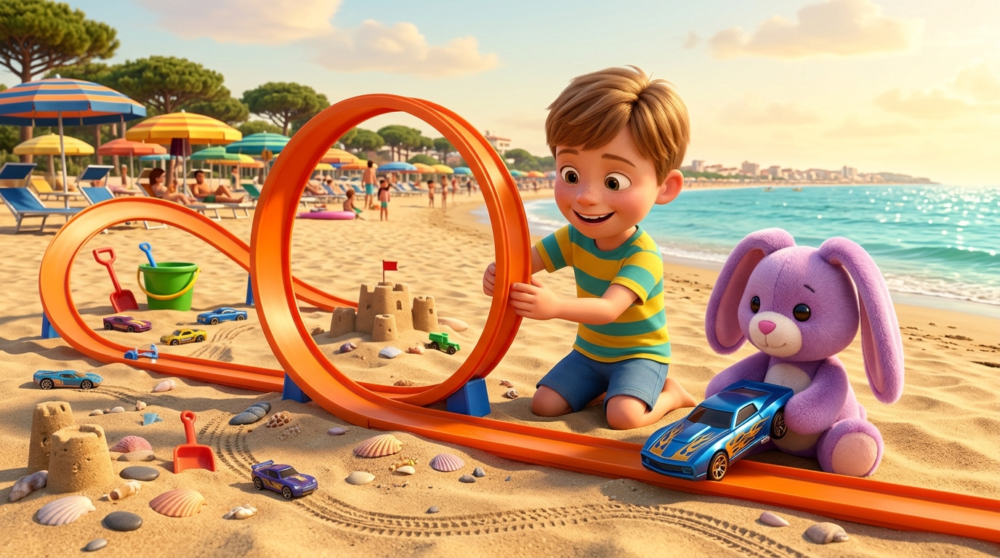

La Grande Pista sulla Spiaggia di Lido degli Estensi
C'era una volta, in un caldo pomeriggio d'estate sulla spiaggia dorata di Lido degli Estensi, il piccolo Sebastian — che tutti chiamavano affettuosamente Seby — intento a preparare la gara più straordinaria del mondo. Tra gli ombrelloni colorati, il profumo dei pini marittimi e le onde azzurre del mare Adriatico che facevano ciac-ciac sulla riva, Seby aveva costruito con la sabbia e i binari arancioni una pista delle Hot Wheels lunghissima, piena di curve paraboliche, ponti di conchiglie e un gigantesco giro della morte!
Accanto a lui, seduto su un morbido telo da mare come un vero direttore di gara, c'era il suo amico più caro e inseparabile: Pupurabbu, un dolcissimo coniglietto di peluche tutto viola, con due lunghe orecchie vellutate color lavanda, il nasino rosa cucito a mano e la pancia soffice perfetta per le coccole.
Seby aveva sei anni e voleva un bene immenso al suo tenero Pupurabbu: non iniziava mai nessuna avventura senza di lui! Tra le zampine morbide del pupazzo viola brillava la macchinina Hot Wheels preferita di Seby, un bolide blu elettrico decorato con fiammelle dorate, pronto a sfrecciare sotto il sole della riviera.